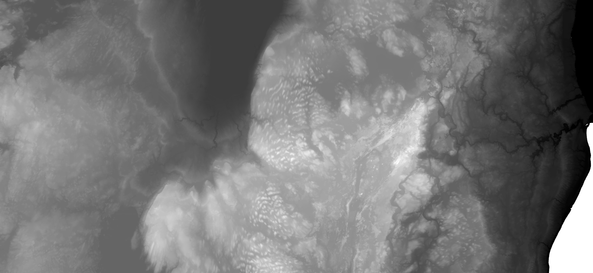
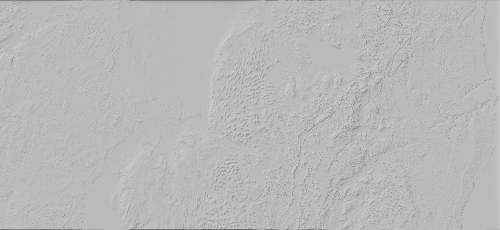
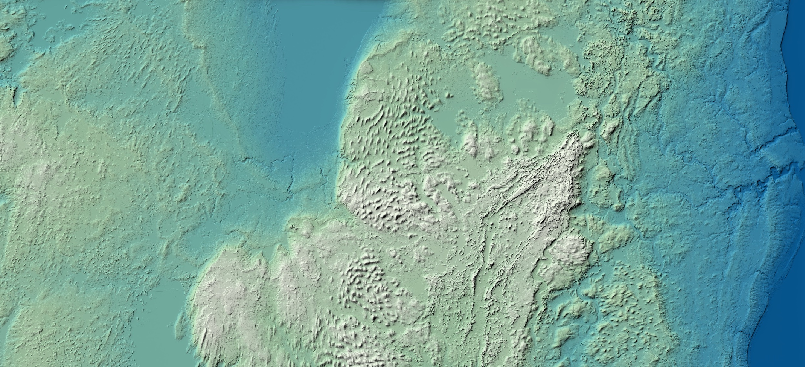

Fun With Blender
I discovered Blender (3D rendering software) when my advisor suggested I use it to create the basemap for my Senior Honors Thesis map, and I followed Daniel Huffman's shaded relief tutorial. This led me to make other elevation maps just for fun! Below is a DEM of central Wisconsin that I clipped from the WI DNR's statewide DEM to use as an input in Blender.
In February of 2022, I attended and presented at the Wisconsin Land Information Association's annual conference in Elkhart Lake. The terrain around Fond du Lac and Elkhart Lake shows distinct evidence of its glacial past, which makes for an awesome relief map. East of Lake Winnebago, you can see a field of drumlins that look like little snails all facing the same direction. South of the lake, right outside of Fond du Lac, you see the Niagra Escarpment that I've visited in multiple spots in Wisconsin. It's most obvious in Door County where you can stand on the bluffs and look over Lake Michigan. Below is the shaded relief from Blender.
This is the shaded relief combined with a color ramp I manipulated in QGIS.
Below is the official basemap of my Lower Wisconsin River map. I combined a custom ArcGIS Pro color ramp with the hillshade in Adobe Photoshop, using another one of Daniel's tutorials. This part of Wisconsin looks amazing as a shaded relief because you can see the gentle undulations of the Driftless Area cut through by the Wisconsin River, next to the Mississippi to the west, and the Baraboo Hills in the northeast.